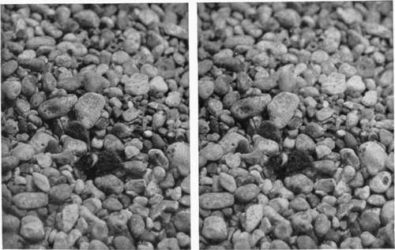
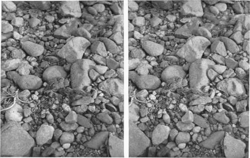
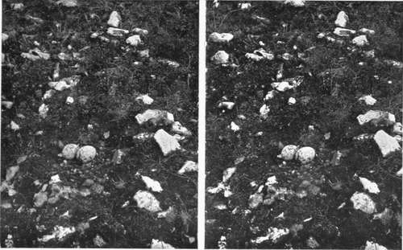
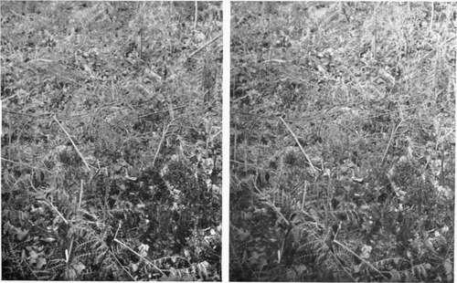
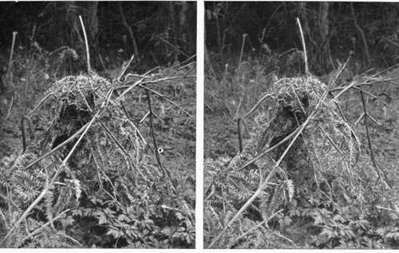
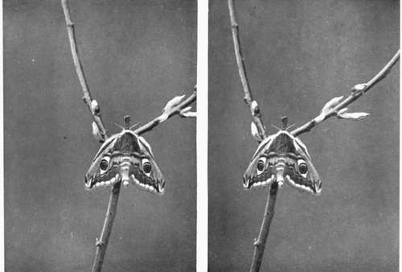
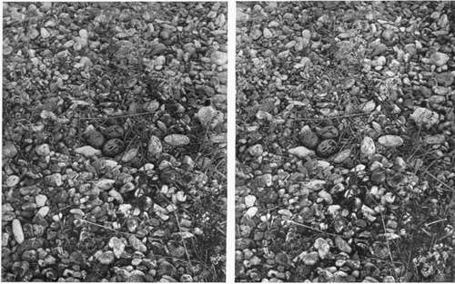

Protective Colouration. Continued
Description
This section is from the book "Nature Photography For Beginners", by E. J. Bedford. Also available from Amazon: Nature Photography for Beginners.
Protective Colouration. Continued
But there are other considerations besides colour affecting this question, and changes of outline or form is one of the most important. The effect of a black or white band, or, for the matter of that, a coloured one also, will serve to " disconnect "and" break up "a continuous outline, and so serve to afford protection, especially if the object be some little distance away from the observer.
The young Lapwing shown in Fig. 17 has a white band or collar round its neck which serves to disconnect the head from the body, and so at a distance the young bird is more likely to appear as two separate objects instead of one. The young Sandpipers, too, in Fig. 89 have a dark line running along the top of the head and the back. The birds, as will be seen by the illustration, endeavour to conceal themselves—when it is impossible for them to run into some hole or under some projecting ledge of a bank—by lying very close to the ground, either in a little natural hollow or between two stones, and probably the first thing about them to strike the eye of an observer would be this dark line. The eye would be likely to follow the course of this line, and in doing so probably overlook the shape of the bird itself.
Fig. 17. Young Lapwing crouching.
Fig. 89. Young Common Sandpipers Crouching.
Fig. 91. Stone Curlew's Eggs in situ.
Other examples illustrated are the eggs of some of the sea-birds, which are placed upon the shingle, generally without any nest, and are extremely difficult to find, looking almost exactly like some of the millions of stones lying around them. Another instance given is that of the Stone Curlew's eggs. These are usually placed among stones, as shown in the photograph, Fig. 91, and at a short distance off might very well pass for stones themselves.
A good illustration of protective resemblance is given in Fig. 92, which shows a Pheasant on her nest. The brown-spotted feathers of the back of the bird look for all the world like the surrounding dead leaves, and I have found that nearly every one who looks at this photograph has to be shown where the bird is before they can see it. Another remarkable protection afforded to the ground-nesting birds, or at any rate some of them, is that during the period of incubation the scent usually given off, and by means of which dogs are able to discover them, is absorbed inwardly by the system, and the birds are consequently less likely to be disturbed.
Fig. 92. Pheasant on Nest.
Very few with untrained eyes would be likely to discover the Wren's nest in the bracken shown in Fig. 93. The nest itself is built of bracken, and is to my thinking a good instance of the instinct of the builder. Another nest of the Wren was found close by this one in a green honeysuckle bush, and was built of green moss, which also matched its surroundings, and had the one in the dead bracken been built of green moss or hay probably it would have been noticed at once.
Fig. 93. Common Wren's Nest in Bracken.
Those interested in Entomology will no doubt have noticed that butterflies which generally have gorgeous coloured wings on the upper surface have the under surface of a much quieter colour scheme. The upper wings are generally folded between the under wings during rest and the insect is much less conspicuous. The Orange-tip Butterfly when at rest on an umbelliferous plant with its wings closed, almost exactly matches the appearance of the latter, and is very inconspicuous compared with the same insect when showing the bright orange tips of the wings in flight. Moths are, perhaps, better examples even than butterflies, because while the latter are generally brightly coloured, the former are, in Great Britain at least, usually of a dull colour, and when any brighter colouring exists it is as a rule confined to the hind wings, which are covered over by the upper wings when the insect is at rest. Many moths look extremely like their surroundings when at rest and often deceive a most practised eye. Some moths have conspicuous eye spots on their wings, and these appear in certain positions very like a face. The Emperor Moth, for instance, when resting in the heather with its wings partly extended and its abdomen projecting, looks very much like the eyes and nose of some concealed face, and doubtless frightens many of its enemies away by this similarity. Many more instances might be given, but enough has probably been said to set the reader thinking and, I hope, observing similar instances for himself.
Fig. 84. Emperor Moth (female).
" Mimicry" is another interesting subject for study. There are many insects which are either poisonous or very disagreeable to the taste, and their enemies, having found this out, avoid them. But there are other harmless insects which mimic these others either in appearance or colour, and sometimes in both, and so escape their enemies in the same way as the former. The insects coming under this head are usually of a strong colour, for example, our common wasp, which has bright yellow and velvety-black bands, very conspicuous, and these bright colours are often described as " warning " colours, because after a young bird, for instance, has captured a wasp and has been stung he will probably be wise enough to let a similarly coloured insect alone for the future. But there is a fly (Chrysotoxus sylvarum) very like a wasp and yet perfectly harmless, and no doubt the ordinary human being would avoid the fly if it settled near him on account of its resemblance to a wasp. The Hornet, too, is mimicked by the Hornet Clear-wing Moth, which certainly no one but an entomologist would think of taking for a moth; another dipterous fly (Volucella Bombylais) resembles a Humble Bee (Bombus agrorutn) and lives parasitically in the nest of the latter. There are two species of moths known as Bee Hawks from their resemblance to the Humble Bee, and the Hive Bee (Apis niellifica) may often be seen on a flower-head in company with Eristalis tenax, a fly of very similar appearance.
The effect of heat or cold has a good deal to do with the colouration of animals or insects; there are certain moths, for example, found in Great Britain which, although belonging to the same species, vary almost from white to black in different localities from this cause.
The student who thinks on the matters dealt with in this chapter will have abundant reasons for marvelling at Nature's most wonderful ways.
Before I conclude I wish to ask the reader who is interested in the wonders of creation to do all in Ids or her power to discourage to the utmost the wearing of birds, or the feathers of birds not killed for the purpose of food, for personal adornment. Surely the ladies, who are the greatest offenders in this respect, can hardly have given the question their earnest consideration or they would never help in the wholesale work of slaughter did they realise what it means.
Last year (1908) a Bill was introduced into the House of Lords by the Lord Avebury whose writings and work in connection with Nature study are so well known and appreciated. In the preface of the Bill the following words occurred:—
" As a proof of the extent of the destruction that at present goes on, and which is threatening the extinction of some of the most beautiful species, it may be mentioned that at the plume auctions held in London during the last six months of 1907 there were catalogued 19,742 skins of the Birds of Paradise, 1411 packages of the nesting plumes of the White Heron (representing the feathers of nearly 115,000 birds), besides immense numbers of the feathers and skins of almost every known species of ornamental plumaged bird. At the June sale, held at the Commercial Sale Rooms, 1386 Crowned Pigeons' heads were sold, while among miscellaneous bird-skins, one firm of auctioneers alone catalogued over 20,000 Kingfishers. A deplorable feature of recent sales is the offer of large numbers of Lyre Birds' tails and of Albatross quills. The constant repetition of such figures as the above—and these plume sales take place at least every two months— shows that the Legislature must choose between the extermination or the protection of the birds in question".
Fig. 94. Common Tern's Eggs in situ.
The House of Lords passed the Bill, but the House of Commons would not spare the time to consider it. A similar measure was introduced this year (1909) by Sir William Anson, but unfortunately was "talked out" after passing its first reading.
The thanks of all Nature lovers are due to Lord Avebury for his timely help and valuable support to a work in which the Selborne Society, of which he is the distinguished president, has always taken the greatest interest, namely, the preservation from needless destruction of such wild animals and plants as are harmless, beautiful, or rare.
Lastly, I hope the reader who has followed me through the pages of this book will be led to study and think for himself, and to dip as deeply as he can into the open book of Nature, the contemplation of which cannot fail to be to him in later life " A Thing of Beauty and a Joy for Ever".
Continue to:
Tags
nature, photography, art, birds, camera